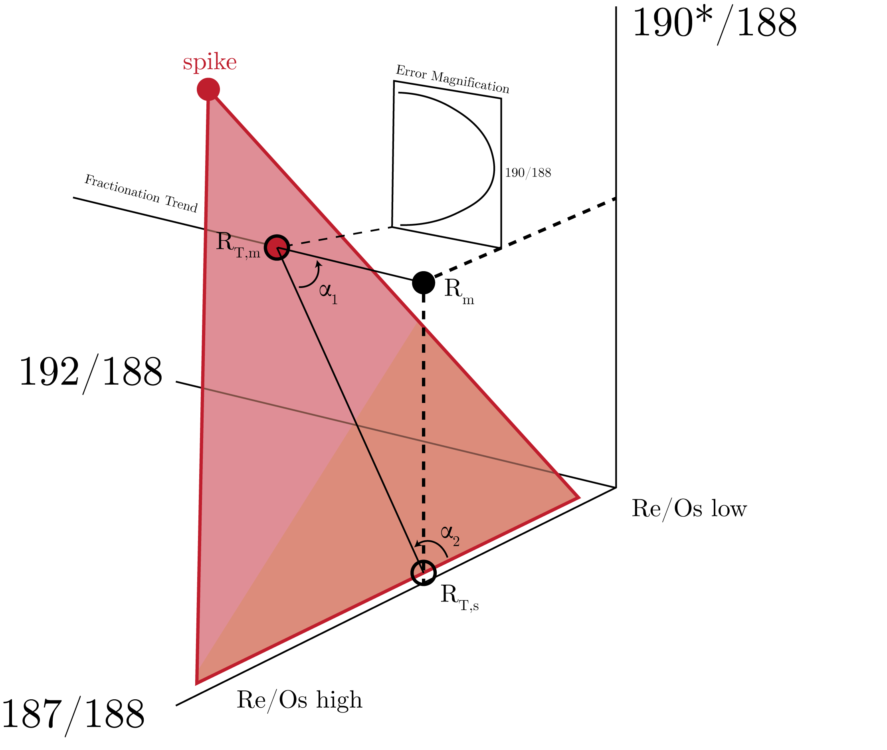
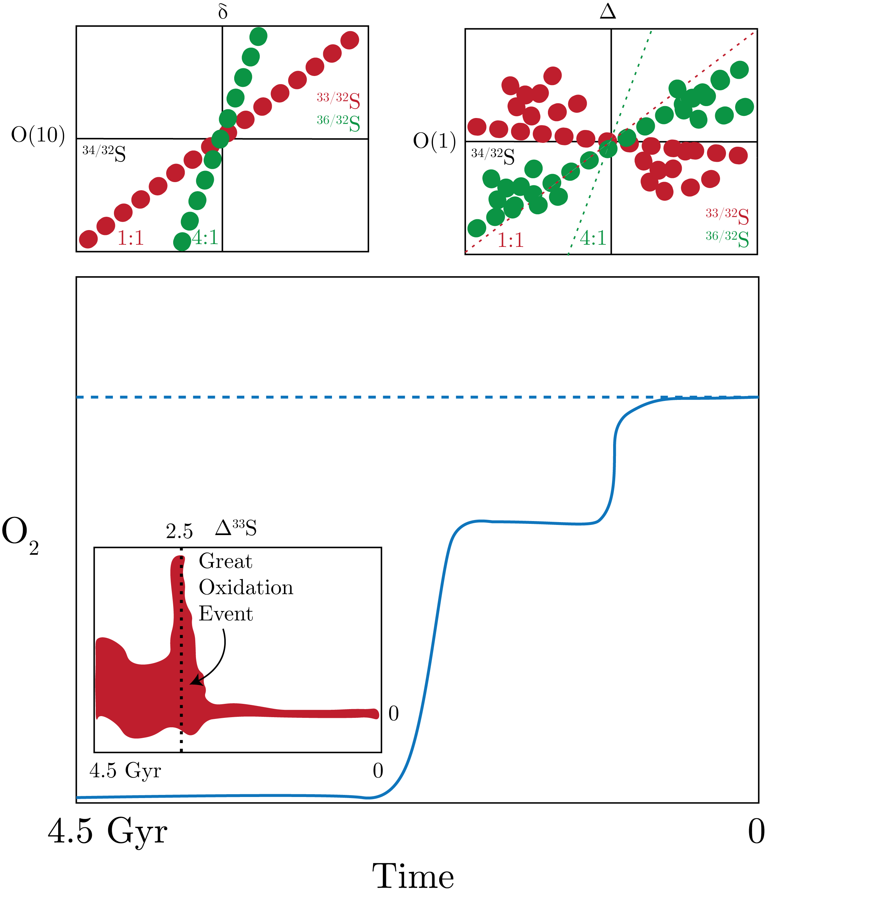

We are looking at the issue of spiking in this lecture for systems that have 3 or more isotope ratios of interest, and are specifially using the Osmium system.
We first look at the Osmium system:
\begin{equation}
184, 186, 187, 188, 189, 190, 192
\end{equation}
which are corresponding relative abundances of:
\begin{equation}
0.02, 1.6, \text{variable}, 16, 16, 26, 41.
\end{equation}
In this system, we are interested in the variable abundance of $^{187}$Os, which is variable given:
\begin{equation}
^{187}\text{Re} \to ^{187}\text{Os}.
\end{equation}
We normalize to $^{188}$Oss given its median abundance, and we use $^{192}$Os as the independent variable given it is the most abundant, and we are finally using $^{190}$Os due to the fact that it is usually used as a spike isotope in experiments.
By spike here, we mean that this is a standardized sample that we can use as a tracer of sorts, that we can get from national labs, for example.
Now, we consider a set-up as in Fig. 1.

Fig. The Spiking of Osmium.
The trick here is to design the spike such that we are minimizing the angles $\alpha_1, \alpha_2$ and therefore getting the lowest error magnification, shown in the inset plot of Fig. 1.
This is essentially a slice through the red region, with 190/180 being the independent variable.
The result from this optimization problem is the following rule:
\begin{equation}
\text{EM}_{min} = \sqrt{R_{sample}\cdot R_{spike}}.
\end{equation}
Mass-independent Fractionation
We can think of this fractionation effect as in Fig. 2.
Fig. Mass-dependent fractionation for the O system. The green region is observational data.
We note that in this figure we consider the enrichment factor (EF) that is the difference between the mass dependent fractionation (MDF) line and the measured value.
We define the MDF as:
\begin{equation}
\Delta m = m_{1} / m_{2},
\end{equation}
where the index 1 represents the numerator mass of the ratio and 2 the denominator.
We now look at the various contributions to the isotope fractionation factor, $\alpha$:
\begin{equation}
\log \alpha = \underbrace{\log \alpha_0}_{\text{Urrey}} + \underbrace{\log k_{anh}}_{\text{Anharmonic} \ll 1} + \underbrace{\log k_{BO}}_{\text{Born-Oppenheimer Approxmiation} \ll 1} + \underbrace{\log k_{hf}}_{\text{Magnetic Isotope Effect} \ll 1}
\end{equation}
We note that MIE could also be known as the nuclear spin isotope effect and is purely a kinetic effect that applies only to isotopes with odd masses in paramagnetic species.
This comes from these species having a single unpaired electron in the valence shell.
This only applies to chemical reactions that are selective to spin, such as reactions that involve transition states in atmospheric reactions, such as ozone (think reactions with UV light).
An example: Sulfur
We can use S to determine the oxygen concentration in deep time.
To do this, we will consider the following S isotopes:
\begin{equation}
32, 33, 34, 36
\end{equation}
with relative abundances:
\begin{equation}
95, 0.8, 4, 0.02.
\end{equation}
We note that $^{33}$S is the only odd element and therefore is suscpetible to MIE.
There are two varying hypothesis to how O$_2$ has developed in deep time.
These are presented as the blue lines in the main plot of Fig. 3.

Fig. 3: MDF and varying precision measurement of S to extract oxygen levels in deep time.
The first is a constant value (dashed) and the second is a stepwise action.
Now, the top two plots of Fig. 3 show S isotope ratios, with the line representing the general trend of the data.
Of interest to us is the difference between the $\delta$ plot on the LHS and the $\Delta$ plot on the RHS.
We note the LHS top plot have data that fall directly on the MDF line.
However, the $\delta$ plot was made using a less precise MS (read: old) versus the $\Delta$ plot made with a very precise MS.
We see that the $\Delta$ plot, which is the deviation from the MDF, shows that $^{33}$S demonstrates MIE, and a negative correlation, as compared to the $\delta$ plot (the dashed lines are the expected MDF lines).
The y-scales are orders of magnutude less on the $\Delta$ plot then the $\delta$ plot.
Now, the inset plot is something interesting.
This is the experimental evidence for the "Great Oxidation Event".
We can see that before 2.5 billion years ago, we have a complete lack of oxygen and after which point we have abundant oxygen, the inverse of the $\Delta^{33}$S data shown in the inset.
It is still debated whether it was an event or a process.
The reason this data is connected to oxygen is from atmospheric chemistry of sulfur, specifically SO$_2$, which is emitted from volcanoes, becomes part of the upper atmopshere, and interacts with UV radiation.
It undergoes photolysis and the thinking is that this process depends on the UV light from the sun and if there is sufficient SO$_2$ in the atmosphere, there is something called the self-shielding effect.
This effect is dependent on the isotope, for which only certain wavelengths provide the adequate energy to proceed with the reaction.
Therefore, it is the sulfur isotope that drives whether or not this process takes place in the atmosphere.
Thus, this effect is dependent on the spin effect (MIE), which only exists for odd masses.
There might also be photoexcitation on the SO$_2$.
So, what happens is that:
\begin{equation}
\text{SO}_2 + \text{O}_2 \to \text{SO}_4,
\end{equation}
which then is super soluable, which is stripped out of the atmosphere and put into the land and ocean resevoirs.
We do not see the effect nearly as much any more in the atmosphere, with the currently thinking being that the reaction above has been fully oxidized out of the atmosphere, so we are only dealing with sulfate and sulfides in the sediments.
Kinds of Mixing and Fractionation
Consider Fig. 4.
We go over the different kinds of lines given the spaces.
Fig. 4: Kinds of lines for mixing and fractionation given $\Delta$ and $\delta$ spaces.
Nuclear Volume Effect
We care about the Nuclear Volume Effect now, which mostly takes place in large atoms.
This is also known as the Nuclear Field Shift Effect, though this is not as common as this almost includes the geometry of the effect (though it is less important to the effect than the change in the size).
So, this effect occurs when the radius of the nucleus is so great that it can no longer be considered a positive point change but rather a distributed charge that can interact with the electrons, particularly the inner shell electrons.
Specifically, we get that inner electrons overlap with the nucleus, which means that those negative charges are compensated by part of the nucleus, which changes the charge of the atom, causing the other electrons to be less tightly bound to the nuclear.
We can see this in Fig. 5
Fig. 5: The Nuclear Volume Effect in practice.
From Fig. 5, we note that the larger radius has more potential energy, therefore the electrons are less bound than the smaller radius, which has a minimum that is deeper into the well meaning more tightly bound electrons (more energy needed to disassociate).
In Fig. 6, we can see that the odd mass isotopes have this effect, as well.
Fig. 6: The Nuclear Volume Effect in action.
Some examples of this are in Mercury, Chromium (for 52 being doubly magic), and Platinum (though very small).
We also see that the nuclear binding energy traces the nuclear size very well, as we use the binding energy of H$_2$ to calculate the binding energy.
We can see these in Clacium and Molybdenum.
Finally, we get that the net effect from the MDF and the NVE agrees well with observations, as shown in Fig. 7.
Fig. 7: The net effect from MDf and NVE for U.